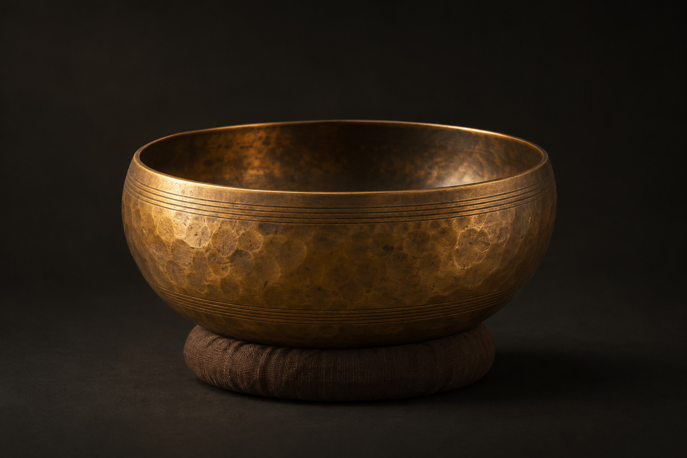

不必趕往哪裡。這一刻，只需聆聽。

點選開始啟用聲音 · 可於背景持續聆聽 · 空白鍵暫停
缽的尺寸、壁厚與材料會影響共振頻率；敲擊位置、槌頭硬度與力道決定哪些振動模態被激發。缽身的微小不對稱形成拍頻，支撐與材料阻尼則改變餘韻。
這裡以非整數倍模態、雙頻拍動及各自衰減重建敲缽音色。基頻代替尺寸與壁厚的綜合結果；空間殘響為額外效果。參數以新敲擊為準，保留舊聲自然消散。
基頻 187 赫茲取自研究中 Tibet 2 古缽的實測基頻；其餘為本網站調校：尾韻 10 秒、拍頻 1.2 赫茲、柔槌與低亮度。研究未定義「大師級」標準，這不是特定大師的錄音或認證參數。
敲擊間隔預設 10 秒，可調整為 1～60 秒；開始時先敲一聲，調整間隔後重新計時。較短間隔會疊加餘韻；停止後尾韻自然消散，靜音則立即降低輸出。切換分頁與最小化視窗仍持續敲擊；裝置休眠或系統凍結音訊時可能中斷。
圖片由人工智慧生成。音訊為聲學啟發的合成，供聆聽與放鬆，不作醫療用途。
依當月設定的工作日數，平均計算每日收入。
依星期計算，未自動扣除國定假日與請假。